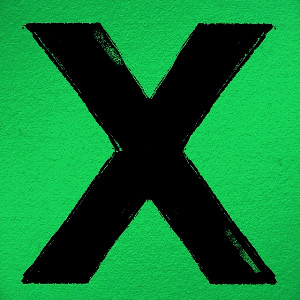

X
Released June 2014
Producers:
- Ed Sheeran & Benny Blanco
- Jake Gosling, Jeff Bhasker & Johnny McDaid
- Emile Haynie, Pharrell Williams & Rick Rubin
X (pronounced "multiply") is the second studio album by English singer-songwriter, Ed Sheeran. It was released on 20 June 2014 in Australia and New Zealand, and worldwide on 23 June through Asylum Records and Atlantic Records. It was an international commercial success, peaking at No. 1 in 15 countries.

Best Tracks
- Thinking Out Loud
- Photograph
- I See Fire
- Tenerife Sea
- Sing
- The Man
+ Tracks
- One
- I'm a Mess
- Runaway
- Bloodstream
- Don't
- "Thinking Out Loud", earned him the 2016 Grammy Awards for Song of the Year and Best Pop Solo Performance.
- In December 2014, Spotify named X the most-streamed album in the world for 2014.
- Ed Sheeran with his guitarr
- The album has been certified 3× Platinum in Canada and 4× Platinum in the US, with sales of over four million copies.